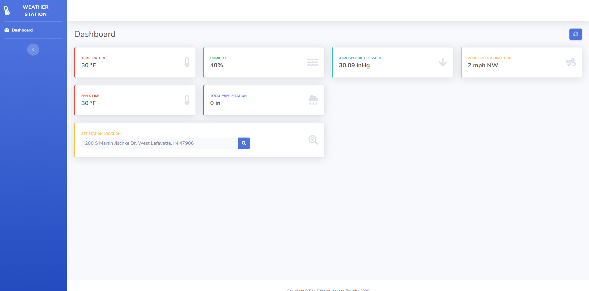

Ben Scholer
Seeking Full-Time Software Development Position
Why you should consider me
I've held 4 separate software engineering positions working primarily with full-stack development, and 2 systems administration positions.
I bring a fresh set of eyes to any project, and love coming up with innovative and practical solutions to problems.
I have a very positive disposition, and have been told by many that I'm a pleasure to work with. Just take a quick glance at my recommendations!
I've worked on numerous personal projects with their topics including, but not limited to, web development, network security, embedded systems, scripting, web servers, etc.
A weather station monitoring website I built for a class project.Strengths
Education
Purdue University • West Lafayette, IN
- Graduating in December 2020, BS in Computer Information Technology, Professional Writing minor
- University Lutheran Church: President (2018-2019), Social Chairman (2018, 2020), Vice President (2017)
- Beta Sigma Psi Fraternity: Social Chair, PR Chair, Brotherhood Chair, Recruitment Board, Chaplain
Professional Experience
Purdue Engineering Computer Network • West Lafayette, IN
Full Stack Development Intern • February 2020-Current
• C# MVC • Web Development • Node.js • Designing and developing an internal web app • Accelerating and transforming the process of deploying new computers • Implementing better Git practices • Centralizing deploy checklists • Developing Slack bots to streamline ticket resolution
Hardware Technician Intern • August 2019-February 2020
• Proactively resolved computer issues • Creatively found solutions to issues • Communicated with users and coworkers to diagnose computer problems
Nucor Fastener • St. Joe, IN (Greater Fort Wayne Area)
Systems Administration Intern • May-August 2019
• PowerShell scripting • Automated tedious systems administration tasks • Reduced downtime for employees • Educated individual employees about Windows 10 functionality • Documented workflows for future IT employees
Nucor Buildings Group • Waterloo, IN (Greater Fort Wayne Area)
Full Stack Development Intern • May-August 2018
• C# MVC • Polymer (web elements) • Azure • Designed and developed an internal web app • Implemented a new org chart database, improving on SAP • Simplified employee timecards and time-off requests
Purdue Agricultural and Biological Engineering • West Lafayette, IN
Web Development Intern • January-December 2017
• Web Development • SQL • Developed the Indiana Water Monitoring Inventory website • Incorporated modern web development techniques • Delivered a seamless experience for users
The Schneider Corporation • Lawrence, IN (Greater Indianapolis Area)
Development / GIS Intern • May-August 2017
• SQL • Python • C# • ArcGIS • Automated database tasks • Simplified data retrieval, import and export • Standardized and normalized very large databases
Technical Skills
Programming Languages: Java (8 years), C / C++ / Arduino (7 years), Web
(JavaScript/TypeScript, HTML, CSS) (6 years), C# (3 years), Python (4 years)
Database: SQL Server/T-SQL (5 years), Microsoft Access (5 years), MongoDB (1 year)
Frameworks and Libraries: web extensions (3 years), .NET Core (1 year), Razor Pages (1
year), EF Core (1 year), Polymer.js (1 year), Express.js (1 year), TensorFlow (1 month)
Design and IDEs: IntelliJ (8 years), Arduino IDE (8 years), WebStorm (6 years), Visual
Studio w/ ReSharper (5 years), VIM (5 years), PyCharm (4 years),
Operating Systems: Windows (15 years), UNIX (10 years)
Administrative Software: Windows administration tools (GPO, WSUS, SCCM) (2 years), PDQ
Inventory/Deploy (1 year)
Get in touch
-
Email
bscholerwork@gmail.com -
Phone
(317) 663-9269 -
Elsewhere
© Ben Scholer 2020. All rights reserved. Design: HTML5
UP.